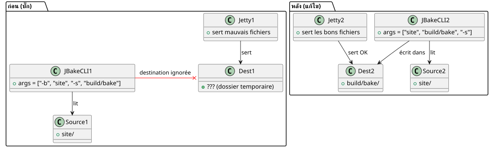

ทำไม `serve` ถึงแสดงเว็บไซต์ที่ดูไม่ดี ในขณะที่ `publishSite` สมบูรณ์แบบ
เผยแพร่เมื่อ 22 April 2026
คุณเคยเจอช่วงเวลาที่เว็บไซต์ของคุณในเครื่องดูไม่เป็นท่าเลย แต่พอดีพลอยขึ้นออนไลน์แล้วทุกอย่างกลับสมบูรณ์แบบไหม? นั่นคือสิ่งที่เกิดขึ้นกับฉันกับปลั๊กอิน Gradle JBake ของฉัน งาน`serve`แสดงปุ่มสี่เหลี่ยม ข้อความสีเข้มบนพื้นหลังสีดำ และ CSS ที่หายไปอย่างแปลกประหลาด แต่ทว่า`publishSite`สร้างเว็บไซต์เดียวกันออกมาอย่างไร้ที่ติ ตัวการไม่ใช่ CSS ไม่ใช่เบราว์เซอร์ และไม่ใช่แคช แต่เป็นโค้ด Kotlin เพียงบรรทัดเดียว — และเป็นนิสัยที่ไม่ดีเกี่ยวกับอาร์กิวเมนต์บนบรรทัดคำสั่ง
- ก๊อก
-
Please provide the French text you’d like me to translate into Thai.
ฉาก: สกรีนช็อตสี่ภาพ เรนเดอร์สองชิ้น
มันเกิดขึ้นหลังจากระบบล่ม ฉันได้จับภาพหน้าจอไว้สี่ภาพเพื่อเปรียบเทียบการแสดงผลในเครื่อง (./gradlew serve`บน`localhost:8820) ด้วยการเรนเดอร์ออนไลน์ (`publishSite`บน GitHub Pages) สองภาพหน้าจอต่อหน้า: ด้านบนและด้านล่าง
การเรนเดอร์ภายในเครื่อง
กลับไปด้านบน— ปุ่ม Project และ Template เป็นเล็ก, สี่เหลี่ยมผืนผ้า, ด้วยสีมาตรฐาน (สีน้ำเงินและสีเขียว) การ์ด Start Writing มีพื้นหลังสีดำเรียบ, โดยไม่มีกรอบ

ส่วนท้ายของหน้า— คำบรรยายใต้หัวข้อ "บทความและแหล่งข้อมูลล่าสุด" คือแทบอ่านไม่ออก, มืดเกินไปบนพื้นหลังสีดำ วันที่ใต้รูปภาพบล็อก ("17 October 2013" ฯลฯ) เป็นไม่อยู่.

แสดงผลออนไลน์
กลับขึ้นด้านบน— ปุ่มเดียวกันเป็นใหญ่ รูปไข่ สีเขียวนีออนฉูดฉาด, ข้อความเป็นตัวพิมพ์ใหญ่ การ์ดมีกรอบสีขาวมนพร้อมเงาตกกระทบ.

ส่วนท้ายของหน้า— คำบรรยายคืออ่านง่ายชัดเจน. วันที่คือที่มองเห็นได้. การ์ดของบทความมีมุมโค้งและชื่อเรื่องคือตัวหนา.

สิ่งแรกที่นึกถึงคือธีม ฉันใช้ระบบธีมแบบไดนามิก (สว่าง มืด คอนทราสต์สูง) ที่อิงจาก`localStorage`. บางที local store อาจกำลังกระตุ้นธีม high-contrast อยู่หรือเปล่า? ไม่ใช่ ฉันได้เขียนไว้แล้วhttps://cheroliv.com/blog/2025/0098_preloading_css_variable_post.html[บทความทั้งฉบับเกี่ยวกับการโหลดธีมล่วงหน้า], ฉันรู้ว่ามันทำงานอย่างไร และถึงแม้อยู่ในโหมด high-contrast โครงสร้าง CSS (ปุ่มทรงรี, เงา) ก็ควรจะอยู่ตรงนั้น แต่มันกลับไม่มี
ความคิดที่สอง: แคชของเบราว์เซอร์ ไม่ใช่ ฉันได้ทดสอบด้วยโปรไฟล์ที่สะอาดแล้ว diff ยังคงอยู่
ปฏิกิริยาตอบสนองที่สาม:`serve`ไม่ได้ให้บริการไฟล์เดียวกันกับ`publishSite`.
การวินิจฉัย: serve ไม่ได้ชี้ไปยังโฟลเดอร์ที่ถูกต้อง
ปลั๊กอิน Gradle ของฉัน`bakery`มีภารกิจหลักสองประการ:
-
bake: สร้างเว็บไซต์แบบสแตติกใน`build/bake/` -
serve: เริ่มเซิร์ฟเวอร์เว็บภายในเครื่อง -
publishSite: หน่อ`build/bake/`ไปยัง GitHub Pages
ความแตกต่างนั้นสามารถมาจากได้เพียง`serve`. Si publishSite`เผยแพร่เนื้อหาที่ถูกต้อง นั่นก็คือว่า`build/bake/`ดีแล้ว หาก`serve`แสดงสิ่งอื่น นั่นก็คือมันไม่ได้ถูกใช้งาน`build/bake/.
มาดูโค้ดกัน ใน`SiteManager.kt`, งาน`serve`ถูกกำหนดไว้ดังนี้:
tasks.register("serve", JavaExec::class.java) { task ->
task.apply {
mainClass.set("org.jbake.launcher.Main")
classpath = jbakeRuntime
environment("GEM_PATH", jbakeRuntime.asPath)
jvmArgs(/* ... */)
args = listOf(
"-b", file(site.bake.srcPath).absolutePath,
"-s", layout.buildDirectory.get()
.asFile.resolve(site.bake.destDirPath)
.absolutePath
)
}
}org.jbake.launcher.Main`เป็นจุดเริ่มต้นของ JBake CLI 2.7.0 แนวคิด: การส่ง-b`สำหรับโฟลเดอร์ต้นทางและ`-s`สำหรับโฟลเดอร์ปลายทาง แล้วเปิดโหมดเซิร์ฟเวอร์ ยกเว้นว่า…
สาเหตุราก: JBake CLI ไม่ทำงานแบบนั้น
JBake 2.7.0 รออาร์กิวเมนต์แบบตำแหน่งสำหรับ source และ destination จากนั้น flags ที่เป็นทางเลือก ลายเซ็นคือ:
jbake <source> <destination> [options]แต่ในโค้ดของฉัน ฉันเขียนว่า:
args = listOf("-b", "/path/to/site", "-s", "/path/to/build/bake")JBake ตีความสิ่งนี้ว่า:
-
-b→ แยกวิเคราะห์แฟล็ก "bake" (บูลีน) ที่ถูกใช้ไปแล้ว -
/path/to/site→ กลายเป็นอาร์กิวเมนต์แบบตำแหน่งตัวที่ 1 (source) -
-s→ แปลงแฟล็ก "serve" (บูลีน) เซิร์ฟเวอร์เริ่มทำงานแล้วทันที -
/path/to/build/bake→ กลายเป็นอาร์กิวเมนต์กำพร้า ซึ่งถูกละเลยหรือตีความผิด
ผลลัพธ์: JBake กำลังใช้`/path/to/site`เป็นแหล่งที่มาไม่ได้คำนึงถึงจุดหมายปลายทางที่จัดหาให้ (build/bake), และใช้ไดเรกทอรีเริ่มต้นของมัน (มักจะ`./output`หรือสำเนาชั่วคราว) ไฟล์`css/styles.css`ของบิลด์จึงถูกเขียนทับหรือถูกละเลย และเป็น CSS ค่าเริ่มต้นเก่า (ที่ไม่มีตัวแปร custom ไม่มีมุมโค้ง ไม่มีเงา) ที่ถูกเสิร์ฟ
เมื่อเปรียบเทียบ,bake et publishSite`ใช้ปลั๊กอิน Gradle JBake อย่างเป็นทางการ(`jbake-gradle-plugin) ซึ่งเขียนอย่างเรียบร้อยใน`build/bake/`ผ่าน API ของ Gradle พวกเขาไม่ผ่าน CLI
วิธีแก้: อาร์กิวเมนต์แบบตำแหน่ง ไม่ใช่แฟล็ก
การแก้ไขนั้นง่ายมาก — เมื่อรู้แล้ว ก็เพียงแค่ส่ง source และ destination เป็นอาร์กิวเมนต์แบบตำแหน่ง แล้ว`-s`สุดท้าย:
args = listOf(
file(site.bake.srcPath).absolutePath,
layout.buildDirectory.get()
.asFile.resolve(site.bake.destDirPath)
.absolutePath,
"-s"
)แค่นั้นเอง เปลี่ยนแค่สามบรรทัด บั๊กก็แก้แล้ว
หลังจากเผยแพร่ปลั๊กอินในเครื่องแล้ว (publishToMavenLocal), un `./gradlew serve`เรียกใช้ JBake ด้วยไวยากรณ์ที่ถูกต้อง:
jbake /home/user/project/site /home/user/project/build/bake -sและครั้งนี้ เซิร์ฟเวอร์ Jetty ที่ฝังอยู่ใน JBake ให้บริการเนื้อหาของ`build/bake/`— เหมือนกับสิ่งที่เผยแพร่ทางออนไลน์

ตรวจสอบอย่างรวดเร็วด้วย curl
เพื่อให้แน่ใจว่าเซิร์ฟเวอร์ให้บริการเนื้อหาที่ถูกต้อง เพียง`curl`ยืนยันว่า`index.html`มี`data-bs-theme="light"`และที่`build/bake/css/styles.css`มีขนาด 31,402 ไบต์พอดี — เหมือนกับไฟล์ที่สร้างโดย`bake`.
$ ./gradlew serve
# Dans un autre terminal :
$ curl -s http://localhost:8820/ | grep data-bs-theme
<html ... data-bs-theme="light" ...>
$ curl -I http://localhost:8820/css/styles.css
HTTP/1.1 200 OK
Content-Length: 31402
Content-Type: text/cssการเรนเดอร์ภายในเครื่องขณะนี้เป็นเหมือนกันทุกพิกเซลไปยังผลลัพธ์การเรนเดอร์ที่ปรับใช้แล้ว
ทำไมบั๊กนี้ถึงร้ายกาจ
คุณเห็นไหมว่าทำไมมันถึงจับได้ยาก?
-
ไม่มีข้อผิดพลาดที่ชัดเจน: JBake ไม่ได้แครช มัน "ทำงานได้" เพียงแต่มีโฟลเดอร์ผิด
-
บิลด์ทำงานได้Please provide the French text you’d like me to translate into Thai — your message appears to be missing the source text.
./gradlew bake`สร้างไฟล์ได้อย่างถูกต้องใน`build/bake/. -
การดีพลอยทำงานได้:`publishSite`ผลักดันเนื้อหาที่ดีบนออนไลน์
-
มีเพียง
serveเท่านั้นที่เสีย: งานพัฒนา งานที่เราใช้อยู่ตลอดเวลาเพื่อทำซ้ำ -
ความเคยชินกับ
-key value: ในฐานะนักพัฒนา เราถูกหล่อหลอมด้วยประสบการณ์หลายปีกับ Unix CLI (-o output`,-i input). JBake CLI เป็นข้อยกเว้น — source และ destination เป็นพารามิเตอร์ระบุตำแหน่ง
บทสรุป
หากคุณดูแลปลั๊กอิน Gradle ที่ห่อหุ้ม JBake (หรือเครื่องมือ CLI ใด ๆ),อ่านเอกสารของอาร์กิวเมนต์แม้ว่าคุณจะคิดว่าคุณรู้จักพวกเขาแล้วก็ตาม สมมติฐานโดยนัย (-s = "set destination") อาจทำให้คุณต้องเสียเวลาหลายชั่วโมงกับการดีบักด้วยภาพ
ในที่นี้ การแก้ไขคือการเปลี่ยนอย่างแท้จริง:
args = listOf("-b", src, "-s", dest) // ❌ BUGen :
args = listOf(src, dest, "-s") // ✅ FIXย้ายโทเคนสามตัว แล้วไซต์โลคัลของฉันก็กลับมาสวยงามเท่ากับไซต์ในโปรดักชันอีกครั้ง
บทเรียน: เมื่อผลการเรนเดอร์แตกต่างระหว่าง local กับ prod โดยไม่มีสาเหตุที่ชัดเจน ให้สงสัยที่ pipeline ก่อน — ไม่ใช่ CSS ไม่ใช่เบราว์เซอร์ และยิ่งไม่ใช่เฟรมเวิร์ก มักเป็นขั้นตอนก่อนการเรนเดอร์นั่นแหละที่เล่นไม่ซื่อ